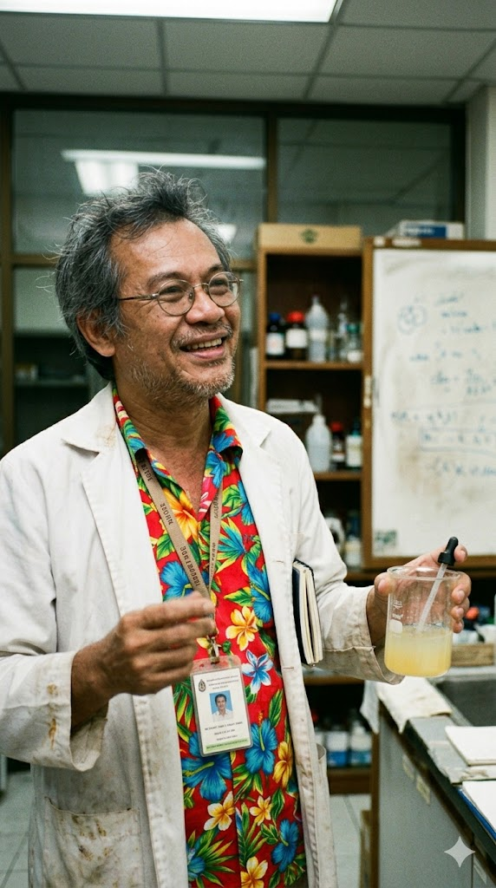
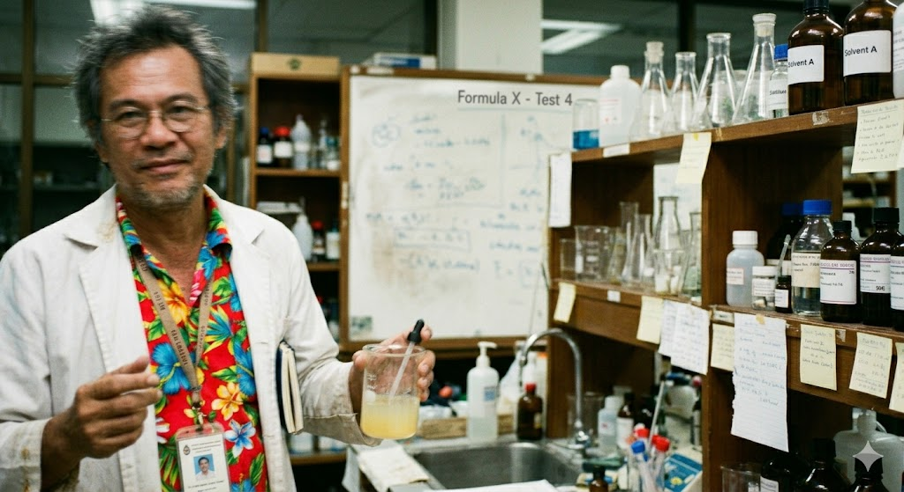
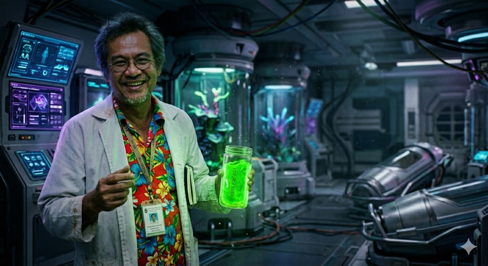
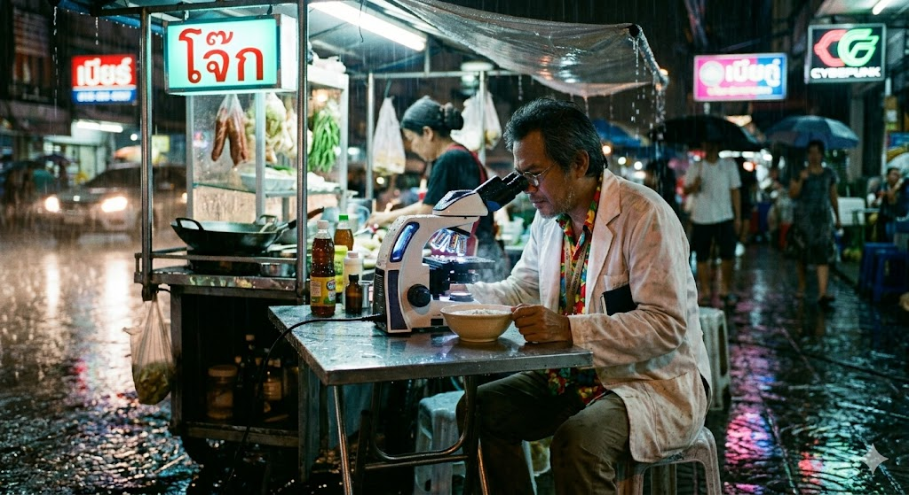
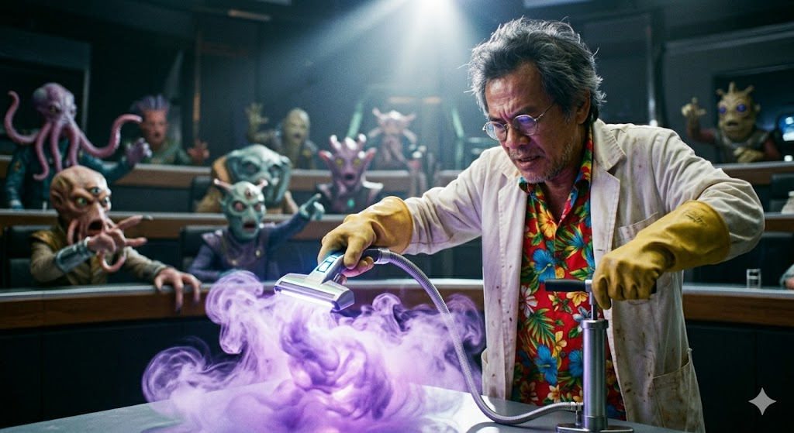
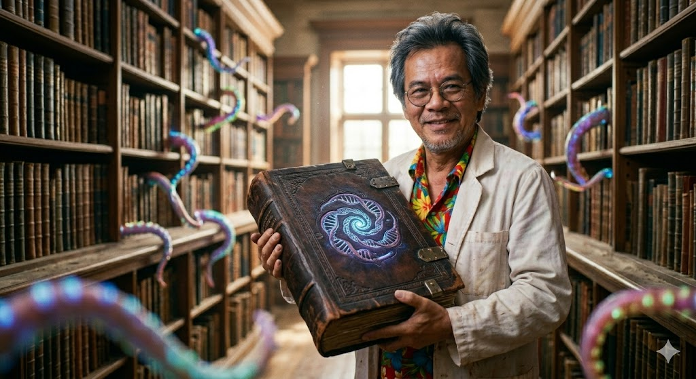

นักวิจัยระดับแกแล็กซีคลาส
"มนุษยชาติมักตั้งคำถามว่าเราอยู่โดดเดี่ยวหรือไม่... ผมตอบได้เลยว่าไม่ แถมพวกเขายังมีปัญหาลำไส้แปรปรวนที่รักษายากกว่าที่เราคิด"

สถานะปัจจุบัน
กำลังผ่าตัดกบอวกาศ
ชื่อเสียงของเขาโด่งดังระดับพหุภพ (Multiverse) ในเหตุการณ์ "วิกฤตการณ์ก๊าซพลูโต" เมื่อปี 2012 เอกอัครราชทูตที่เป็นสิ่งมีชีวิตแบบก๊าซจากดาวพลูโต เกิดอาการ "หัวใจล้มเหลว" (ซึ่งจริงๆ แล้วคือการรั่วไหลของแรงดันคอร์ติซอลในแกนกลางลำตัว) กลางเวทีประชุมสมาพันธ์ทางช้างเผือก แพทย์มนุษย์ต่างดาวทุกดวงดาวต่างยืนงงเป็นไก่ตาแตก แต่ศ.ดร.สมควร อาศัยไหวพริบ คว้า "เครื่องดูดฝุ่นยี่ห้อ Dyson" และ "ที่สูบลมจักรยานแบบเหยียบ" มาทำการ CPR ผายปอดแบบสลับขั้วแรงดัน จนสามารถดึงสติท่านทูตกลับมาได้สำเร็จ เหตุการณ์นั้นทำให้เขาได้รับฉายาว่า "หัตถ์พระเจ้าแห่งระบบสุริยะ"
ผลงานโบว์แดงที่ทำให้เขาได้รับการบรรจุเป็นภาคีสมาชิกราชบัณฑิตยสถานแห่งกาแล็กซี คือการเดินทางไปทำวิจัยภาคสนามที่ระบบดาว Alpha Centauri เป็นเวลา 4 ปีโลก เขาเป็นคนแรกที่สามารถไขปริศนาทางสรีรวิทยาของชาวเซนทอเรียนได้สำเร็จว่า "ระบบทางเดินอาหารของพวกเขาไม่ได้ขับเคลื่อนด้วยคาร์โบไฮเดรต หรือโปรตีน แต่ทำงานด้วยการบริโภค 'ดราม่าบนอินเทอร์เน็ต' และ 'มุกแป้ก'" ยิ่งมีคนเถียงกันบนทวิตเตอร์ (X) มากเท่าไหร่ ชาวเซนทอเรียนยิ่งมีอายุยืนยาวและมีผิวพรรณเปล่งปลั่งขึ้นเท่านั้น การค้นพบนี้พลิกโฉมวงการโภชนาการอวกาศไปตลอดกาล


หนังสือที่นักศึกษาสายชีววิทยาอวกาศทุกคน "ต้องมี" (แม้ส่วนใหญ่จะซื้อไปหนุนหัวนอนเพราะความหนาระดับ 2,000 หน้า)

ศ.ดร. สมควร
พิมพ์ครั้งที่ 18
คู่มือเอาตัวรอดในห้องแล็บ มีบทย่อยพิเศษ: "ทำอย่างไรไม่ให้โดนกินระหว่างผ่าตัด" และ "วิธีแยกแยะระหว่างเส้นเลือดดำกับหนวดดูดเลือด"
รางวัลหนังสือดีเด่นแห่งทศวรรษ
เจาะลึกระบบเผาผลาญที่อธิบายได้ว่า ทำไมชาวดาวอังคารถึงแพ้ "กะเพราไก่ไข่ดาว" อย่างรุนแรง (สปอยล์: เพราะใบกะเพรามีฤทธิ์ทำลายระบบสืบพันธุ์แบบแยกส่วนของพวกเขา)
ฉบับปกแข็ง (กันกระสุน)
ว่าด้วยความเป็นไปได้ในการปฏิสนธิระหว่างมนุษย์โลกกับมนุษย์ต่างดาว พร้อมข้อควรระวังเรื่อง "ลูกที่เกิดมาอาจคายกรดซัลฟิวริกตอนเรอ"
ตีพิมพ์ในวารสารระดับ Q1 (ของระบบสุริยะอื่น)
ตีพิมพ์ใน: Journal of Xenobiological Nonsense (Impact Factor: 42.0)
บทคัดย่อ: การวิจัยพบว่าจังหวะกลองและเสียงแคนความถี่ 140 BPM มีผลทำให้พันธะซิลิกอนในตับของชาวครอกเกนเกิดการสั่นพ้อง ส่งผลให้พวกเขาสามารถสังเคราะห์แสงได้แม้อยู่ในผับ
ตีพิมพ์ใน: Intergalactic Anatomy Review
บทคัดย่อ: สยบข้อถกเถียงยาวนานกว่าร้อยปี ด้วยการผ่าตัดพิสูจน์เส้นประสาทไขสันหลัง พบว่าหนวดเกลียวอันน่าเกรงขาม มีระบบประสาทสัมผัสที่เชื่อมตรงกับจุดศูนย์กลางความฟิน ทำให้สรุปได้ว่า หน้าที่หลักคือ "การเกาหลังตัวเอกอย่างเมามันส์"
ตีพิมพ์ใน: Transactions on Extraterrestrial Sanitation
บทคัดย่อ: เสนอสมการทางคณิตศาสตร์ในการออกแบบชักโครกที่รองรับมวลสารที่ขยายตัวในเวลาที่ติดลบ (Negative Time Expansion) ลดปัญหาท่อตันข้ามมิติได้อย่างมีนัยสำคัญ
จากการใช้ความรู้ด้านสรีรวิทยา ไกล่เกลี่ยข้อพิพาทเรื่อง "การแย่งที่จอดรถยูเอฟโอบนดวงจันทร์" ระหว่าง 3 เผ่าพันธุ์ได้อย่างสันติ
มอบให้ในฐานะ "ผู้รอดชีวิตจากการถูกมนุษย์ต่างดาวลักพาตัว (Abduction) ครบ 10 ครั้งโดยไม่เสียสติ" (แถมยังแอบขโมยอุปกรณ์แพทยข์ของเขาติดมือกลับมาด้วย)
ศัลยแพทย์เอเลี่ยนยอดเยี่ยม 5 ปีซ้อน จากสถิติ "ผ่าตัดพลาดตัดหนวดผิดเส้นน้อยที่สุดในกาแล็กซี"
โหวตโดยสมาคมแม่บ้านดาวศุกร์ จากการคิดค้น "ครีมบำรุงผิวที่ทนทานต่อฝนกรดกำมะถัน" สกัดจากเมือกหอยทากอวกาศ
โครงการเหล่านี้เปิดรับเงินทุนบริจาค (รับเป็นเงินบาทคริปโต หรือแร่ยูเรเนียมสกัดบริสุทธิ์เท่านั้น)

ทำการวิจัยเอนไซม์ในกระเพาะอาหารของสิ่งมีชีวิตสายพันธุ์ "ตัวเขมือบดาว" (Star Eaters) เพื่อหาวิธีนำมาประยุกต์ใช้ในการย่อยสลายขยะพลาสติกบนโลก ปัญหาปัจจุบัน: เอนไซม์มันดันย่อยสลายบีกเกอร์ทดลอง บีกเกอร์แก้ว และโต๊ะสแตนเลสในแล็บไปด้วย

การพัฒนาท่านวดแผนไทยประยุกต์ เพื่อรองรับสรีระแบบ 8 แกนสมมาตร และไร้กระดูกสันหลัง ของชาวดาวซิริอุส โครงการนี้ได้รับความร่วมมือจากหมอนวดแผนไทยย่านวัดโพธิ์ เป้าหมายคือการผลักดันให้ประเทศไทยเป็น Hub การท่องเที่ยวเชิงสุขภาพระดับกาแล็กซี